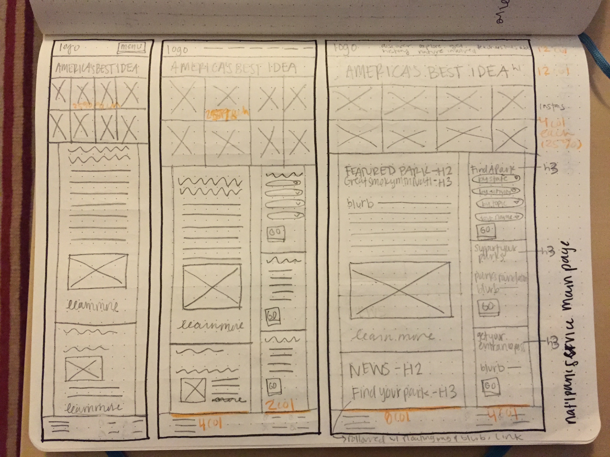
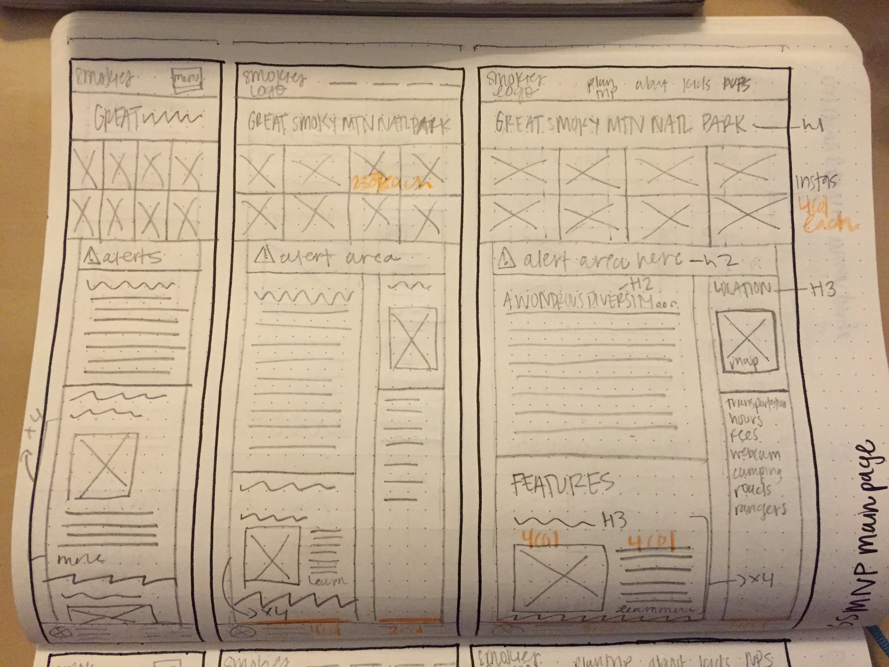
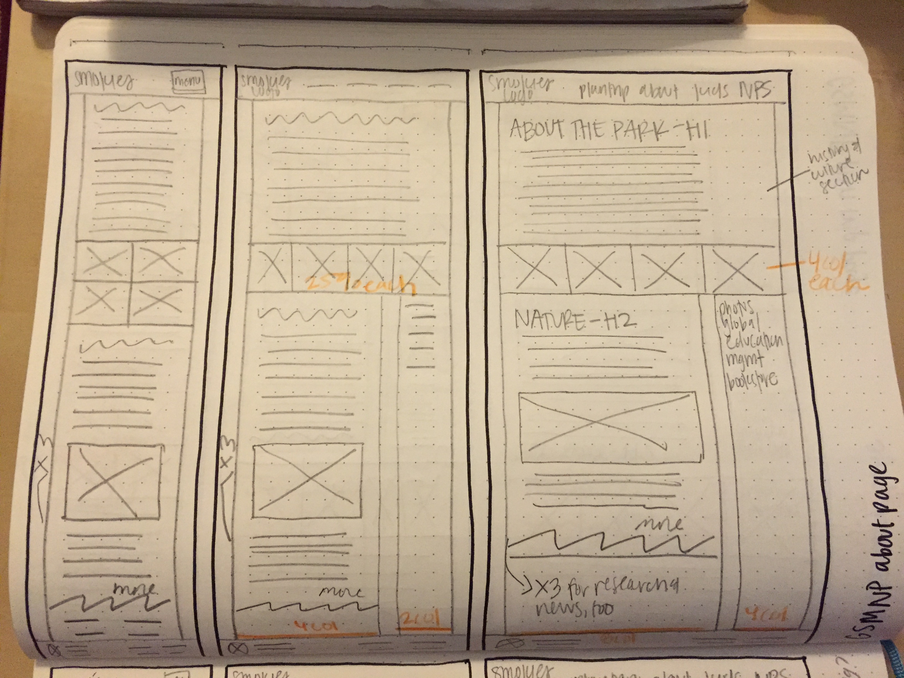
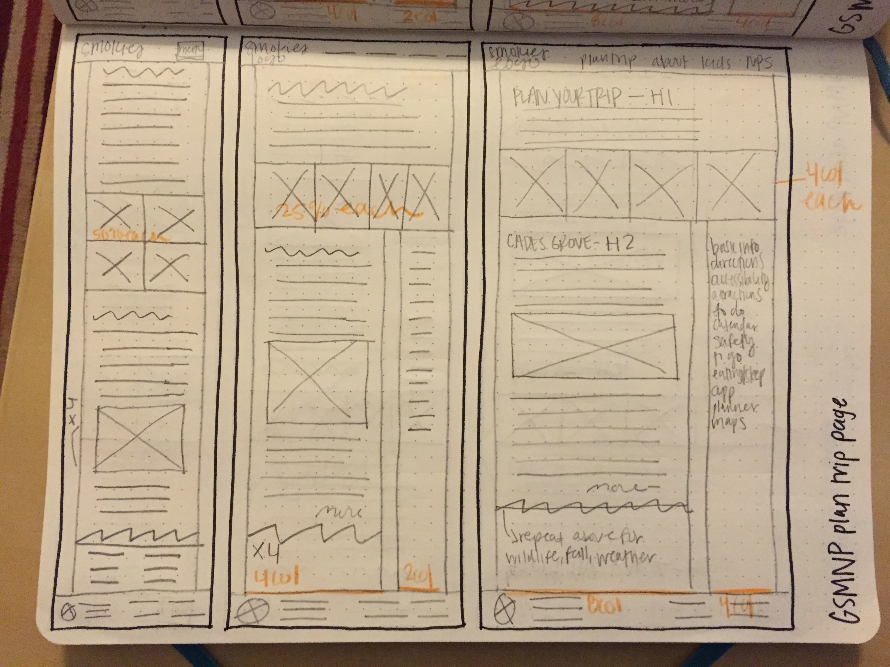
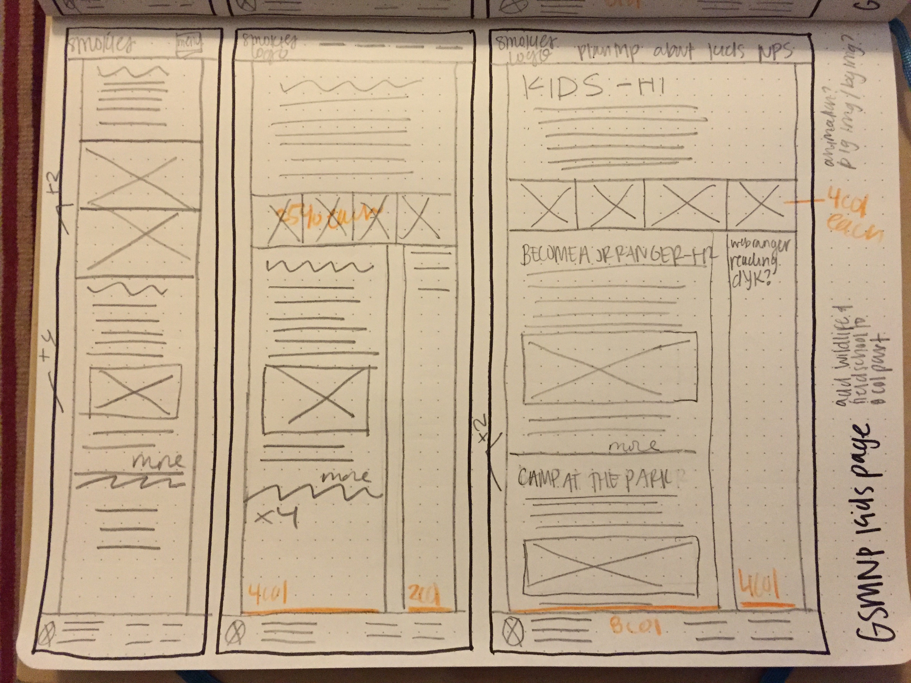
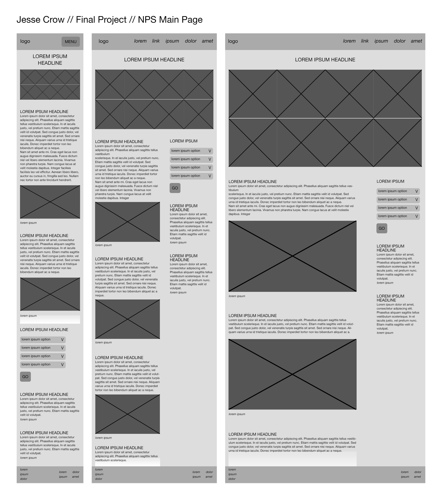
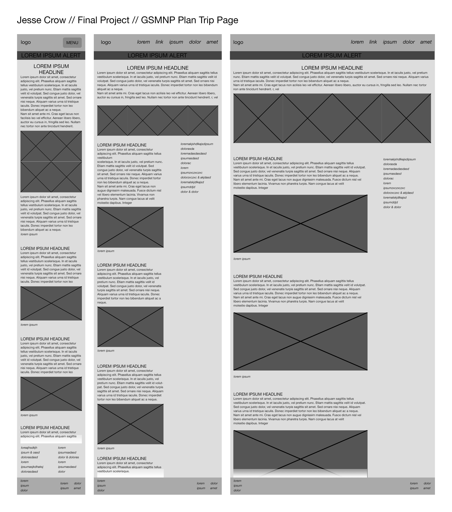
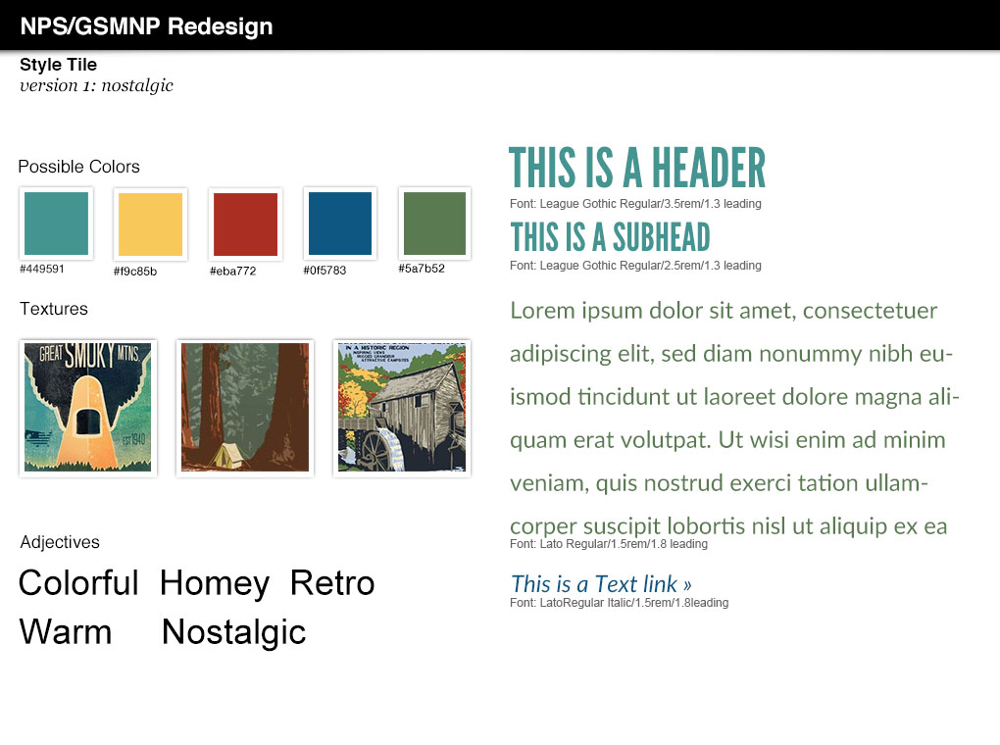
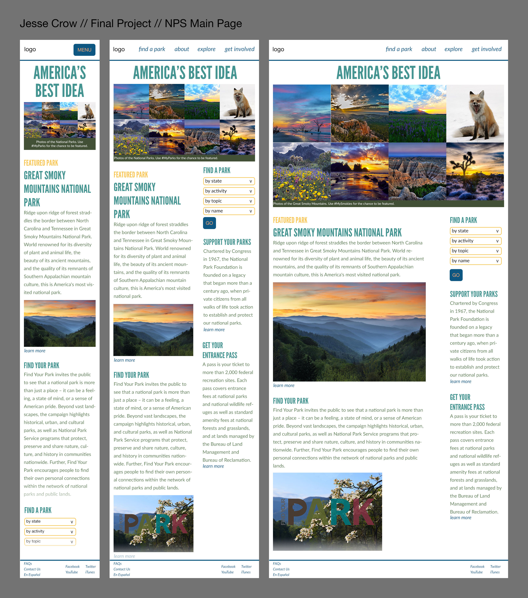
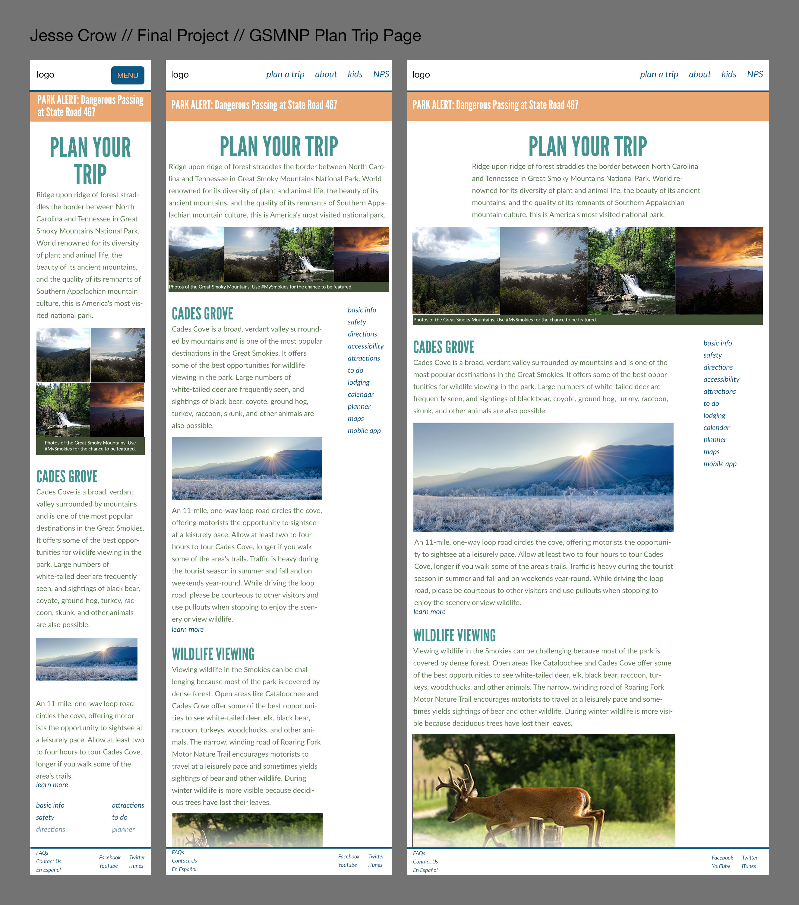

Introduction
Wallace Stegner referred to the National Parks as "America's Best Idea." The idea of the Park Service began in the mid 1800s, when President Lincoln signed a law preserving Yosemite Valley and Mariposa Grove. In 1872, Congress established Yellowstone National Park, and in 1916 President Wilson established the National Park Service. Great Smoky Mountain National Park was chartered in 1934 and established in 1940 and is the most visited National Park.
One of the main problems the NPS is facing is that people who visit the Parks are primarily older, and their website isn't doing everything that it can to serve as a solution to this problem.
Their website currently feels exclusive and limited in terms of audience (both groups have links in the header that lead to special content). Keeping this part of the audience is important, but I also expanded to include millenials.
The website also feels antiquated and you have to dig on the website to find pictures that show the beauty and power of the parks.
Perhaps the biggest problem with their website is that it isn't cohesive with their social media presence. On social media channels, NPS feels youthful, exciting, and still retains the trustworthy feel a government branch should have. Their website does not reflect this.
My goals for this project were to make the NPS & Smokies website have a more modern feel that appeals to millenials and also streamline the vibe of their social presence with their website. I also wanted to create a cohesive design system that could be applied to all Parks within the NPS system.
Process
For the research and discovery phase, I completed a wordlist, SWOT analysis, competitive market study, website analysis, sketches, wireframes, styletiles, and comps.
         Grid
The main NPS page, and all Smokies pages (aside from the kids page) use the same grid mixin below the fold.
$col: 6.805%;
$gut: 1.666%;
@mixin grid($colnum) {
width: ($col * $colnum) + ($gut * (($colnum) - 1));
}
To implement for .main content, use
{@include: grid(7); float: left; margin-right: ($col + (($gut) * 2);}
To implement for .secondary content, use
{@include: grid(4); float: right; margin-right: 0}
Colors
$teal: #449591;
rgb(68,149,145)
$yellow: #f9c85b;
rgb(249,200,91)
$red: #ad2f25;
rgb(173,47,37)
$blue: #0f5783;
rgb(15,87,131)
$green: #5a7b52;
rgb(90,123,82)
Typography
Aa Bb Cc Dd Ee Ff Gg Hh Ii Jj Kk Ll Mm Nn Oo Pp Qq Rr Ss Tt Uu Vv Ww Xx Yy Zz
League Gothic By The League of Movable Type
$header-font-fam: "league-gothic", sans-serif;
Aa Bb Cc Dd Ee Ff Gg Hh Ii Jj Kk Ll Mm Nn Oo Pp Qq Rr Ss Tt Uu Vv Ww Xx Yy Zz
Lato By Łukasz Dziedzic
$body-copy-font-fam: "lato", sans-serif;
Aa Bb Cc Dd Ee Ff Gg Hh Ii Jj Kk Ll Mm Nn Oo Pp Qq Rr Ss Tt Uu Vv Ww Xx Yy Zz
FF Prater Block Web By FontFont
$kids-header-font-fam: "ff-prater-block-web", sans-serif;
This is an h1.
League Gothic | 400 | uppercase | 3.5rem/1.3
This is an h1 on the kids page.
FF Prater Block Web | 400 | uppercase | 3.5rem/1.3
This is an h2.
League Gothic | 400 | uppercase | 2.5rem/1.3
This is an h2 on the kids page.
FF Prater Block Web | 400 | uppercase | 2.5rem/1.3
This is an h3.
League Gothic | 400 | uppercase | 2rem/1.3
This is introductory, above the fold text.
League Gothic | 300 | italic | 1.5rem/1.8
This is a primary paragraph.
Lato | 400 | 1.25rem/1.8
This is a secondary paragraph.
Lato | 400 | 1rem/1.8
This is a primary link.
Lato | 400 | italic | 1.25rem/1.8
This is a secondary link.
Lato | 400 | italic | 1rem/1.8
This is a caption.
Lato | 400 | .9rem/1.2
Logos
I created a cohesive, scalable logo system for this project. I wanted each park to have their own logo, while still being able to be identified as part of the NPS. I also created a small and large version of each logo to use on different sized screens. I wanted to use a patch-like system to play on vintage National Park stickers.
For the main NPS logo, I wanted to keep a reference to their iconic arrowhead logo while bringing it into the patch system and creating additional meanings.
Great Smoky Mountains National Park is known for bears, salamanders, and wildflowers. I chose the bear for their logo as it is their most prominent symbol.
Icon Set